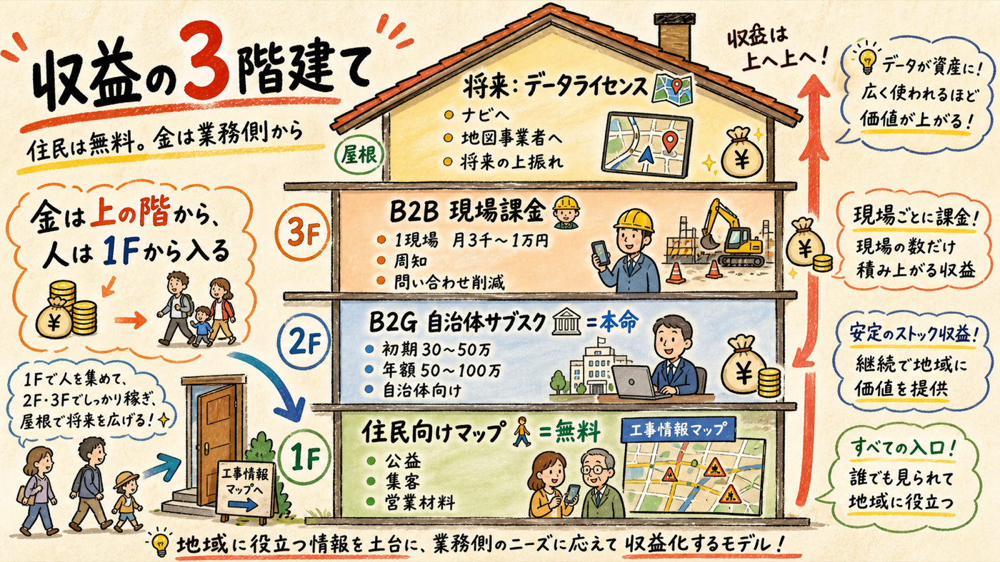
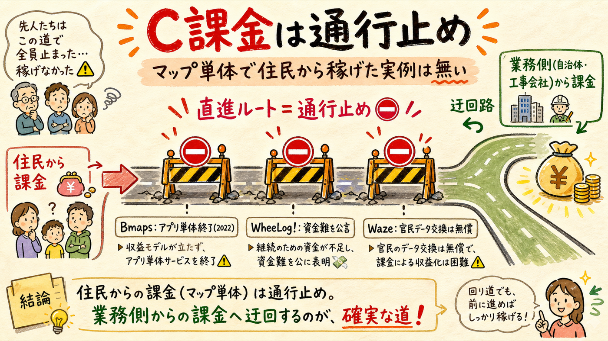
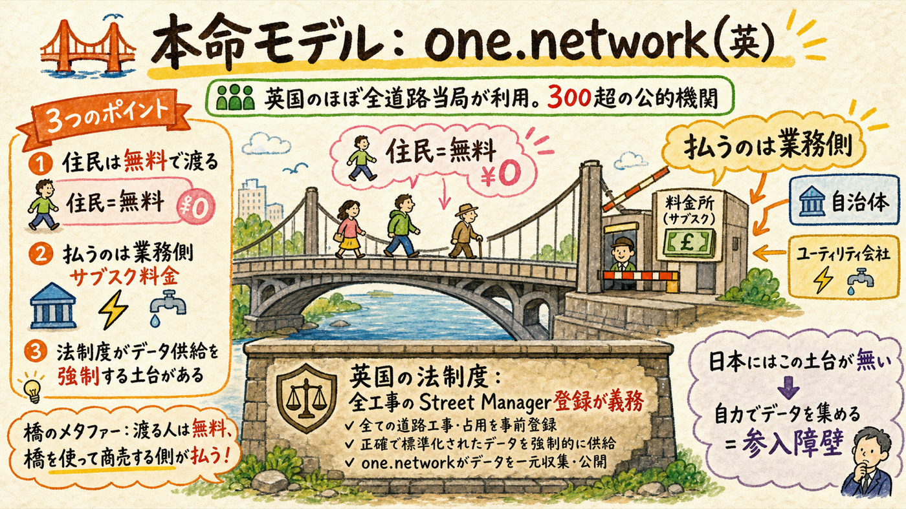
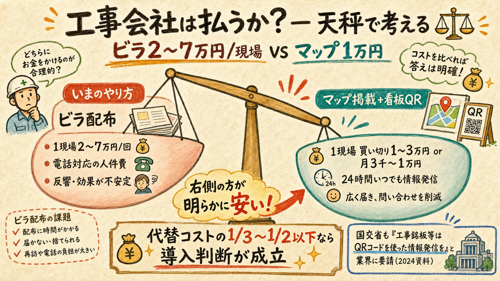

料金表・入札結果・決算・政府統計という一次情報を3系統並列で調べた結論: 住民から金は取れない（実例が全滅）。金は業務側 — 自治体のサブスクと工事会社の現場課金 — から取る。この型には英国に丸ごと先行事例（one.network）があり、日本のB2G実勢価格も既に公表されている。
人は1F（無料）から入り、金は2F・3Fで生まれる

| 階 | 誰から | 単価レンジ | 根拠の種類 |
|---|---|---|---|
| 1F 住民向けマップ | 無料（課金しない） | ¥0 — 公益・集客・B側への営業材料 | 一次情報で「C課金全滅」を確認（セクション02） |
| 2F B2G（本命） | 自治体（道路管理者） | 初期30〜50万円＋年額50〜100万円 | 実在の公表料金表・入札実額（セクション04） |
| 3F B2B | 施工会社（現場単位） | 1現場 買い切り1〜3万円 or 月3千〜1万円 | 周知実費との比較による推定（セクション05） |
| 屋根 データライセンス | ナビ・地図事業者 | 未知数（長期） | one.networkの発展形 [仮説] |
これは意見ではなく、一次情報で確認できる事実

設計への含意: 売るのは「住民に見せること」ではなく「業務側の仕事が減ること」— 苦情・問い合わせ対応の削減、住民周知の効率化、工事調整のデータ化。おさんぽセーフティの住民向け画面は、無料のまま「B側に売るための実演装置」と位置づける。
この事業は空想ではない。英国では20年続いている

英国の one.network（旧 roadworks.org、2004年発足）は、道路工事情報を住民・自治体・工事事業者に見せるプラットフォームそのもの。払うのは道路管理者（自治体）・ユーティリティ会社・交通事業者のサブスクリプションで、住民向けマップは無料。ベンダー公称で英国のほぼ全ハイウェイ当局が利用、300超の公的機関＋同数のユーティリティが参加。2021年に建設テック大手Causeway Technologiesに買収された（＝事業として売却価値がついた）。売上高は英国の小会社開示免除により非開示 [未確認]。
ただし決定的な違いが1つ。英国はNRSWA法＋交通管理法により、全ての街路工事を政府システム（Street Manager）へ登録することが法的義務で、データ供給を法律が強制している。日本に同等の統一義務はない。つまり日本でこれをやるにはデータ収集を自力で解く必要がある — これが最大のリスクであり、解けた者には最強の参入障壁になる。前回調査の「現場との関係構築が堀になる」という結論と一致する。
※ 出典: us.one.network（ベンダー公称）、Companies House（ROADWORKS INFORMATION LIMITED, 会社番号07589848）、英国政府 街路工事調整実務規範（2026年3月版）。2026-07-10取得。
「自治体はいくら払うか」は推測しなくていい。料金表と入札結果がある
| 実例 | 金額（実額） | 情報の種類 |
|---|---|---|
| My City Report（道路通報アプリ。千代田・港・世田谷・大田区、東京都建設局等が導入） | 入会金30万円＋人口別年会費: 5万人以下30万／30万人以下100.8万／100万人以下288万／700万人超960万円 | 一次（公式料金表 2026-04-01改定版PDF） |
| 横浜市 オープンデータサイト再構築業務 | 落札300万円（税抜） | 一次（市の入札結果公表） |
| 上三川町 ハザードマップ作成（印刷＋WEB） | 契約上限1,228.9万円（税込） | 一次（町公表の実施要領） |
| 千葉市「ちばレポ」構築＋5年運用 | 6,600万円 ≒ 年1,320万円 | 二次（市発表ベースの報道） |
| GovTech東京 区市町村DX協働運営の負担金 | 5,174万円÷62自治体 ≒ 83万円/自治体/年 | 一次（2025年度予算書） |
この実測レンジから、工事情報マップのB2G価格は「初期30〜50万円＋年額50〜100万円」が最も通りやすい。自治体側のペインの裏付けも一次情報がある: 道路緊急ダイヤル#9910は関東地方整備局管内だけで年約28,000件の通報、国交省LINE通報は開始3ヶ月で4,253件・うち48.7%が路面異状（国交省執筆資料）。道路の問い合わせ対応は行政の実業務として存在する。
規模の分水嶺はGovTech東京の共同調達。1自治体ずつ売ると都内62自治体×年80万 ≒ 年5,000万円が上限 [推定]。しかしGovTech東京は62区市町村の共同調達スキームを持っており、ここに乗れれば1契約で面が取れる。都知事杯の実装支援→GovTech東京窓口ルートは、営業チャネルとしても最短。
工事会社が払うかは、代替コストとの比較で決まる

ここはまだ二次情報＋推定。「ビラ配布が負担か」はあなた自身の住民体験からも疑義が出ている論点で、実際の支払い意思は9月の現場ヒアリング（工事看板→施工業者ルート）で確かめるまで確定しない。天秤の図は仮説であって検証結果ではない。
数字は全て計算式つき。過大に見せない
| 市場 | 概算 [推定] | 計算式 |
|---|---|---|
| 都内 B2G | 年約5,000万円 | 62自治体 × 年額中央値80万円（GovTech東京負担金83万・MCR中規模帯と整合） |
| 都内 B2B | 年約6,600万円 | 都内建設業44,655社 × 土木系25% × 元請5% ≒ 550社 × 月1万 × 12 |
| 全国 B2G | 年約1億円（保守のみ） | 1,741自治体 × 導入率10% × 年60万円 |
| 全国 B2B | 年約8億円 | 土木系13.2万社 × 5% × 年12万円 |
正直な評価: SAM上限で全国年10億弱のニッチ市場。VCが好む規模ではないが、5条件フィルターの「高収入の可能性」「時間の主導権」を個人〜小法人で満たすには十分な大きさ。現実的な最初のマイルストーンは「都内3〜5自治体 × 年80万 ＝ 年商240〜400万円」で、ここまでは個人事業のまま到達し得る（前回B2G調査の3関門と整合）。
| まだ一次情報でないもの | どう埋めるか |
|---|---|
| 都内の工事現場数の実数（分母） | 都オープンデータ「23区内都道の路上工事情報」を実カウント。道路使用許可の件数統計は警察の公表資料に存在しないことを確認済み — 情報公開請求が次の手 |
| 工事側の支払い意思 | 9月の現場ヒアリング5件（工事看板→施工業者ルート）で「周知・問い合わせにいくら使っているか」を直接聞く |
| 自治体の導入意思 | 都知事杯 Final Stage→実装支援→GovTech東京窓口で道路管理課に当てる |